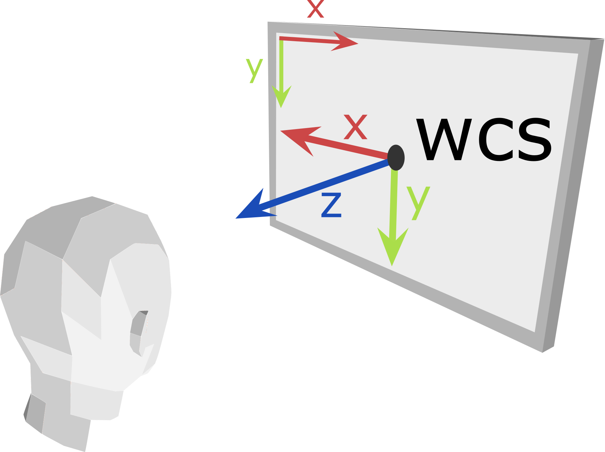
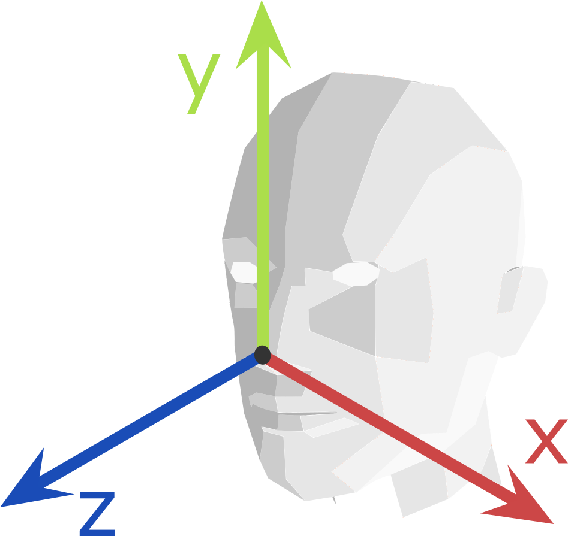
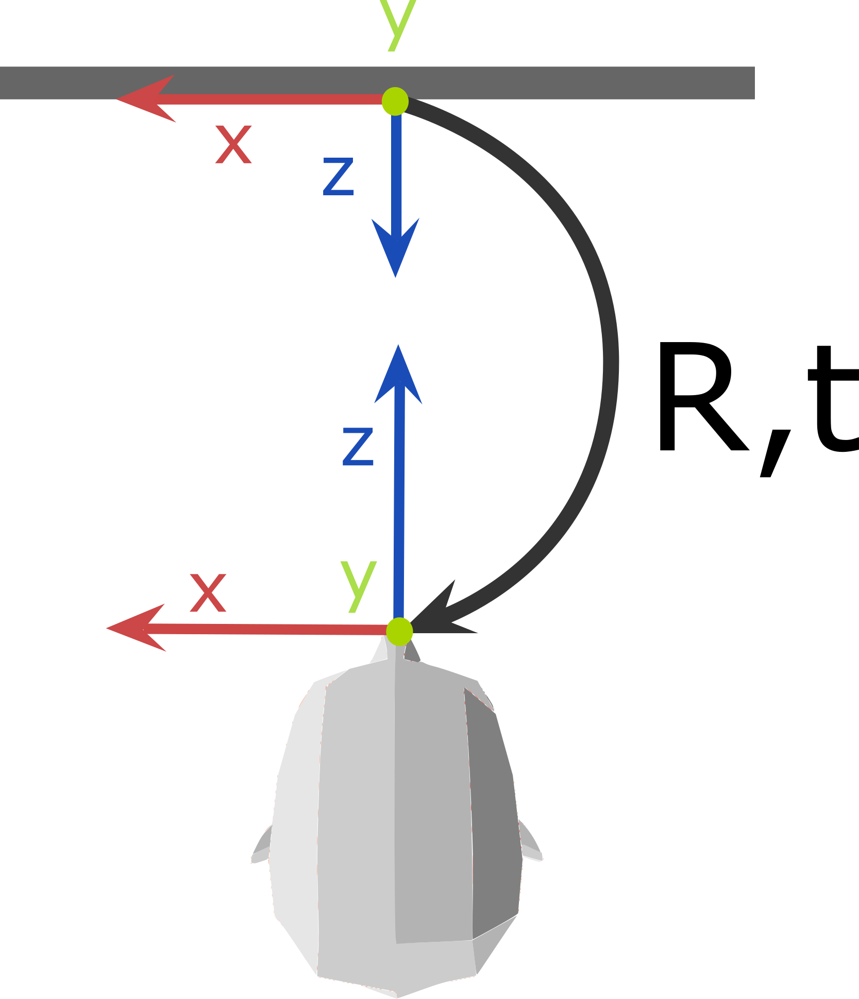

API overview¶
Architecture¶
The API of Beam SDK exposes head and eye tracking data in real time.
Beam SDK works by establishing a connection between the Beam eye tracking application by Eyeware, and your own code which uses the API described in these pages. This is a server-client model. Beam acts as the server, and you write the client which consumes the tracking data published by the server, allowing you to build your own eye tracking-enabled application. There can be multiple clients connected to the same Beam server at one time.
The access to the tracking data is provided by the TrackerClient class.
This is the main entry point of the API, available in all supported languages.
For language-specific information about TrackerClient, check out the API reference.
In general, a TrackerClient object creates a connection between the Beam application and your code.
In the current version of Beam SDK, this connection is made via a TCP port over a network.
Constructing a TrackerClient object without arguments sets a default hostname and port which work fine in many configurations.
However, it is possible to set a specific hostname and port, depending on your setup and network.
Note
The Beam application and your client program communicate data over TCP sockets.
Most commonly, they are designed to be running on the same PC.
In scenarios in which they are running on different PCs, they need to be on the same network (e.g., share wifi), and the IP of the PC running Beam needs to be specified in the client program (hostname argument).
Reference frames and units of tracking data¶
Beam SDK gives tracking information about:
the head of the person who is being tracked (head tracking), in 3D;
the pixel of the computer screen that the person is gazing at (screen gaze tracking), in 2D.
Head tracking information is expressed with respect to a World Coordinate System (WCS), or root frame, positioned on the center of your computer screen. The head pose reference frame is positioned on the nose tip: see Head pose reference frame for illustrations. Head tracking positions are expressed as physical distances, in meters.
Screen gaze coordinates are expressed in pixels (integer units) with respect to the top-left corner of the screen, which has coordinates <0, 0>.
Note
The screen that is considered for screen gaze tracking is the display in which the Beam application is capable of showing the gaze bubble. That is, the main display in the operating system.
The diagram below shows the WCS at the center of the screen (xyz axes represented in red-green-blue, respectively), as well as the 2D frame to represent screen pixels at the top-left corner (xy axes represented in red-green).
{kind=link}
Head pose reference frame¶
The head tracking information exposed by Beam SDK includes a rigid transform (rotation R and translation t) from the World Coordinate System frame to the head frame, positioned on the person’s nose tip.
Here is a lateral view that shows the R,t transform, as well as the xyz axes of the WCS and of the head frame:
{kind=link}
Frontal view showing the head axes from the point of view of the person:
{kind=link}
Top view showing the transform, the WCS frame at the screen center and the head frame on the nose tip:
{kind=link}
Tracking data definitions¶
Here is the meaning of the head and eye tracking fields exposed by Beam SDK, in all supported languages:
Head Pose: 3D head tracking measurements
Lost track: whether head tracking is lost or not for the current frame;
Session ID: numeric identifier of the current, uninterrupted, tracking session; 1
Rotation: rotation matrix of the person’s nose tip, with respect to the World Coordinate System; 2
Translation: translation vector of the person’s nose tip in meters, with respect to the World Coordinate System.
Gaze on Screen: 2D screen gaze tracking measurements
Lost track: whether gaze tracking is lost or not for the current frame;
Screen ID: numeric identifier of the screen being looked at; 3
Lost track: whether gaze tracking is lost or not for the current frame;
Coordinates: horizontal and vertical pixel coordinates of the gazed point, respectively. Counted from the top-left pixel of the screen;
Confidence: realibility level of the gaze tracking result.
- 1
If a person is lost or not tracked for at least three seconds, the Session ID will change. When a person starts being tracked again, he or she will automatically be assigned a new Session ID number.
- 2
Rotation matrices are computed by Beam SDK from a triplet of rotation angles in radians along the zxy axes of the World Coordinate System, respectively. For further information, look up Euler angles and Rotation matrix.
- 3
In the current version, Beam SDK supports single-screen setups. The Screen ID number is always zero.